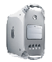
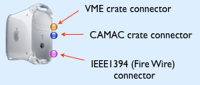
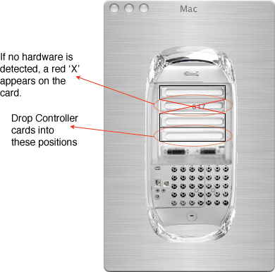

The computer host (Mac) icon in the configuration looks like this:
The icon can have various numbers of connectors associated with the object depending on which PCI cards are being used and can be distinguished by their color. The FireWire connector is always present. Restrictions are in place to prevent connectors from being connected to incompatible objects.

Double-clicking on the icon will open its dialog:

In this example, a 617 controller is in place. In this version of ORCA the slot you place the controllers is not important, regardless of where they are in the physical hardware. One true limitation of ORCA at this point is that you can only have one controller of each type. This limitation will be addressed in some later version.